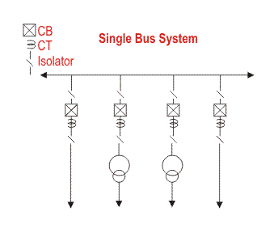
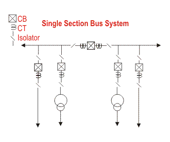
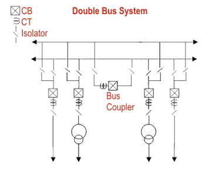
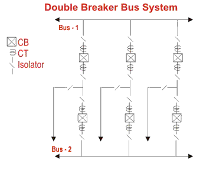
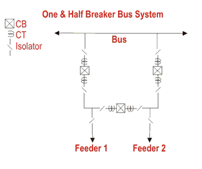

Single Bus System
Advantages of Single Bus System
Disadvantages of Single Bus System
Single Bus System with Bus Sectionalizer
Advantages of Single Bus System with Bus Sectionalizer
Disadvantages of Single Bus System with Bus Sectionalizer
Double Bus System
Advantages of Double Bus System
Disadvantages of Double Bus System
Double Breaker Bus System
One and A Half Breaker Bus System
Advantages of One and A Half Breaker Bus System
Disadvantages of One and A Half Breaker Bus System
Main and Transfer Bus System
Switching Operation for Transferring a Feeder to Transfer Bus from Main Bus without Interruption of Power
Double Bus System with Bypass Isolators
Ring Bus System
There are many different electrical bus system schemes available but selection of a particular scheme depends upon the system voltage, position of substation in electrical power system, flexibility needed in system and cost to be expensed.
The Main Criteria’s To be Considered During Selection of one Particular Bus – Bar Arrangement Scheme Among Others
(i) Simplicity of system.
(ii) Easy maintenance of different equipments.
(iii) Minimizing the outage during maintenance.
(iv) Future provision of extension with growth of demand.
(v) Optimizing the selection of bus bar arrangement scheme so that it gives maximum return from the system.
Some very commonly used bus bar arrangement are discussed below-
Single Bus System
Single Bus System is simplest and cheapest one. In this scheme all the feeders and transformer bay are connected to only one single bus as show.
Advantages of Single Bus System
1) This is very simple in design.
2) This is very cost effective scheme.
3) This is very convenient to operate.
Disadvantages of Single Bus System

1) One but major difficulty of these type of arrangement is that, maintenance of equipment of any bay cannot be possible without interrupting the feeder or transformer connected to that bay.
2) The indoor 11KV switchboards have quite often single bus bar arrangement.
Single Bus System with Bus Sectionalizer
Some advantages are realized if a single bus bar is sectionalized with circuit breaker. If there are more than one incoming and the incoming sources and outgoing feeders are evenly distributed on the sections as shown in the figure, interruption of system can be reduced to a good extent.
Advantages of Single Bus System with Bus Sectionalizer
If any of the sources is out of system, still all loads can be fed by switching on the sectional circuit breaker or bus coupler breaker. If one section of the bus bar system is under maintenance, part load of the substation can be fed by energizing the other section of bus bar.
1
Disadvantages of Single Bus System with Bus Sectionalizer
1) As in the case of single bus system, maintenance of equipment of any bay cannot be possible without interrupting the feeder or transformer connected to that bay.
2) The use of isolator for bus sectionalizing does not fulfill the purpose. The isolators have to be operated ‘off circuit’ and which is not possible without total interruption of bus – bar. So investment for bus-coupler breaker is required.
Double Bus System
1) In double bus bar system two identical bus bars are used in such a way that any outgoing or incoming feeder can be taken from any of the bus.
2)Actually every feeder is connected to both of the buses in parallel through individual isolator as shown in the figure.
By closing any of the isolators one can put the feeder to associated bus. Both of the buses are energized and total feeders are divided into two groups, one group is fed from one bus and other from other bus. But any feeder at any time can be transferred from one bus to other. There is one bus coupler breaker which should be kept close during bus transfer operation. For transfer operation, one should first close the bus coupler circuit breaker then close the isolator associated with the bus to where the feeder would be transferred and then open the isolator associated with the bus from where feeder is transferred. Lastly after this transfer operation he or she should open the bus coupler breaker.
Advantages of Double Bus System
Double Bus Bar Arrangement increases the flexibility of system.
Disadvantages of Double Bus System
The arrangement does not permit breaker maintenance with out interruption.
Double Breaker Bus System
In double breaker bus bar system two identical bus bars are used in such a way that any outgoing or incoming feeder can be taken from any of the bus similar to double bus bar system. Only difference is that here every feeder is connected to both of the buses in parallel through individual breaker instead only isolator as shown in the figure. By closing any of the breakers and its associated isolators, one can put the feeder to respective bus. Both of the buses are energized and total feeders are divided into two groups, one group is fed from one bus and other from other bus similar to previous case. But any feeder at any time can be transferred from one bus to other. There is no need of bus coupler as because the operation is done by breakers instead of isolator. For transfer operation, one should first close the isolators and then the breaker associated with the bus to where the feeder would be transferred and then he or she opens the breaker and then isolators associated with the bus from where feeder is transferred.

One and A Half Breaker Bus System
This is an improvement on the double breaker scheme to effect saving in the number of circuit breakers. For every two circuits only one spare breaker is provided. The protection is however complicated since it must associate the central breaker with the feeder whose own breaker is taken out for maintenance. For the reasons given under double breaker scheme and because of the prohibitory costs of equipment even this scheme is not much popular. As shown in the figure that it is a simple design, two feeders are fed from two different buses through their associated breakers and these two feeders are coupled by a third breaker which is called tie breaker. Normally all the three breakers are closed and power is fed to both the circuits from two buses which are operated in parallel. The tie breaker acts as coupler for the two feeder circuits.
During failure of any feeder breaker, the power is fed through the breaker of the second feeder and tie breaker, therefore each feeder breaker has to be rated to feed both the feeders, coupled by tie breaker.

Advantages of One and A Half Breaker Bus System
During any fault on any one of the buses, that faulty bus will be cleared instantly without interrupting any feeders in the system since all feeders will continue to feed from other healthy bus.
 by
by